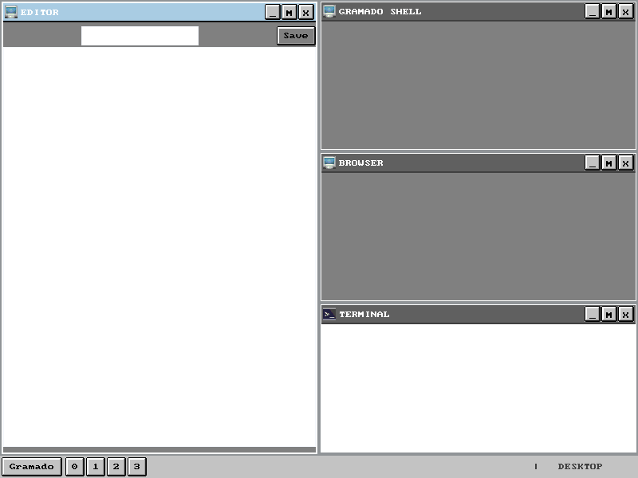

1
2
3
4
This is the web page for the Gramado Organization on github.
The organization has two main projects:
A small frontend toolkit called Gramado and a hobby operating system called Gramado OS.

This page is gonna provide basic information about Gramado front-end toolkit and the for Gramado OS.
To see the source code of the project visit github.com/frednora/gramado.
^ Back to Top! ^